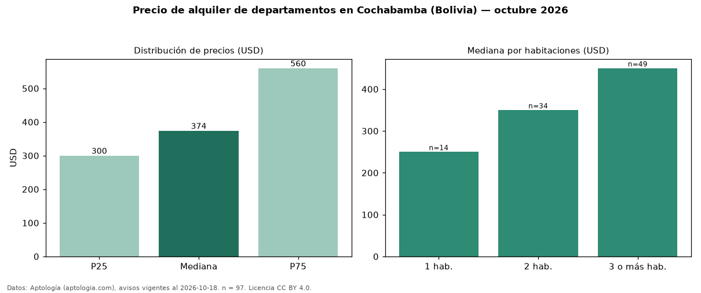

Precio de alquiler de departamentos en Cochabamba (Bolivia) — octubre 2026
En Cochabamba (Bolivia), la mediana de canon mensual de departamentos es USD 374, según 97 avisos vigentes. Por metro cuadrado, la mediana es USD 4,00/m² al mes (n = 91 avisos con área). Por precio mediano es la ciudad 3 de 3 de Bolivia con al menos 30 avisos de departamentos en alquiler (USD). La mediana de toda la vivienda en alquiler de Cochabamba (USD) es USD 360; los departamentos quedan +4 %. El área mediana anunciada es 100 m². El segmento con más oferta es el de 3 o más habitaciones (49 avisos, mediana USD 450); pasar de 1 habitación a 3 o más habitaciones cambia la mediana +80 %. La cuota de mantenimiento o condominio mediana declarada es USD 43,00 al mes (n = 15), aparte del canon. La mitad central de los avisos va de USD 300 a USD 560 (razón 1,9), una dispersión moderada. Datos: Aptología (aptologia.com), CC BY 4.0 — https://www.aptologia.com/bo/alquiler/cochabamba. Archivos: PDF, CSV con las cifras y gráfica PNG.

| Avisos únicos | 97 |
|---|---|
| Percentil 25 | COP 300 |
| Mediana | COP 374 |
| Percentil 75 | COP 560 |
| Mediana por m² | COP 4 |
Fuente: avisos vigentes de portales inmobiliarios recopilados por Aptología, deduplicados (mínimo 30 avisos únicos por celda). Precios pedidos, no cerrados. Fecha: 2026-10-18.